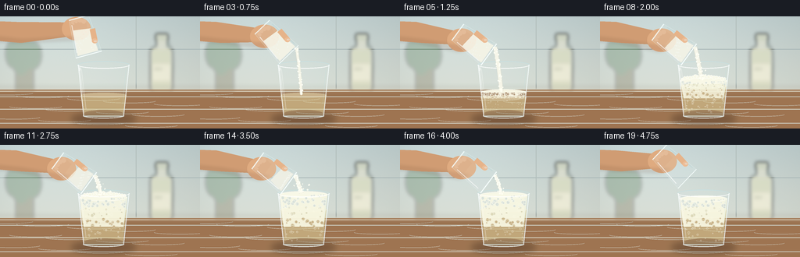
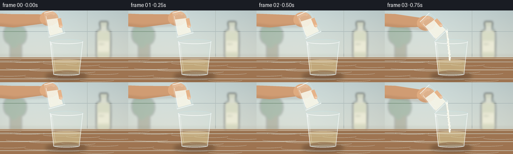

CODING AGENTS AS PIXEL WORLD MODELS
traex/GPT-5.6-Sol · material_0024
点击播放 · 原生 RGB 像素
逐轮保存的候选
回放视频、检查图与代码变化。
每份候选均可单独播放。实际图片检查记录在下方工具轨迹中。
候选 01播放与检查图
点击播放 · 原生 RGB 像素


展开代码变化
--- 上一保存版本
+++ 本次保存版本
@@ -0,0 +1,310 @@
+from pathlib import Path
+import math, json
+import numpy as np
+from PIL import Image, ImageDraw, ImageFilter, ImageFont
+import artifact_io
+
+ROOT = Path(__file__).resolve().parent
+SPEC = json.loads((ROOT / 'task_spec.json').read_text())
+W, H, N, FPS = SPEC['width'], SPEC['height'], SPEC['frames'], SPEC['fps']
+S = 4
+SW, SH = W*S, H*S
+rng = np.random.default_rng(240217)
+
+# Persistent particle identities make bubbles and grains move coherently.
+bubble_specs = []
+for k in range(52):
+ bubble_specs.append(dict(
+ x=float(rng.uniform(109, 157)), phase=float(rng.uniform(0, 1)),
+ r=float(rng.uniform(0.65, 2.25)), speed=float(rng.uniform(0.65, 1.5)),
+ wob=float(rng.uniform(0.6, 2.6)), seed=float(rng.uniform(0, 6.28))))
+foam_specs = []
+for k in range(72):
+ foam_specs.append(dict(
+ u=float(rng.uniform(-1, 1)), d=float(rng.uniform(0, 1)),
+ r=float(rng.uniform(0.7, 2.3)), phase=float(rng.uniform(0, 6.28))))
+grain_specs = []
+for k in range(33):
+ grain_specs.append(dict(u=float(rng.uniform(-1,1)), p=float(rng.uniform(0,1)), r=float(rng.uniform(.35,1.05))))
+
+
+def sc(v): return int(round(v*S))
+def box(b): return tuple(sc(x) for x in b)
+def pts(p): return [(sc(x), sc(y)) for x,y in p]
+def smooth(a,b,x):
+ q=np.clip((x-a)/(b-a),0,1); return float(q*q*(3-2*q))
+def rgba_layer(): return Image.new('RGBA',(SW,SH),(0,0,0,0))
+
+def ellipse(im, b, fill, outline=None, width=1):
+ ImageDraw.Draw(im).ellipse(box(b), fill=fill, outline=outline, width=max(1,sc(width)))
+def polygon(im,p,fill,outline=None): ImageDraw.Draw(im).polygon(pts(p),fill=fill,outline=outline)
+def line(im,p,fill,width=1,joint='curve'):
+ ImageDraw.Draw(im).line(pts(p),fill=fill,width=max(1,sc(width)),joint=joint)
+
+def background(frame):
+ # Cool daylight wall transitioning into a warm wood worktop.
+ yy=np.linspace(0,1,SH)[:,None,None]
+ top=np.array([191,207,208.],float); bot=np.array([224,224,211.],float)
+ arr=top[None,None,:]*(1-yy)+bot[None,None,:]*yy
+ arr=np.repeat(arr,SW,axis=1)
+ # broad light from upper left plus slight vignette and film-like texture
+ X,Y=np.meshgrid(np.arange(SW)/S,np.arange(SH)/S)
+ light=13*np.exp(-((X-38)**2/(2*78**2)+(Y-18)**2/(2*62**2)))
+ vig=-8*((X-W/2)/(W/2))**2-3*((Y-H/2)/(H/2))**2
+ noise=np.random.default_rng(991).normal(0,.75,(SH,SW))
+ arr += (light+vig+noise)[...,None]
+ arr=np.clip(arr,0,255).astype(np.uint8)
+ im=Image.fromarray(arr,'RGB').convert('RGBA')
+ d=ImageDraw.Draw(im)
+ # backsplash seams and diffuse horizon
+ d.line([(0,sc(42)),(SW,sc(42))],fill=(161,178,180,75),width=sc(1))
+ d.line([(sc(174),0),(sc(174),sc(93))],fill=(164,181,183,40),width=sc(1))
+ # blurred background shapes: vinegar bottle on the right and a leafy herb on the left
+ bg=rgba_layer(); db=ImageDraw.Draw(bg)
+ db.ellipse(box((198,28,222,96)),fill=(28,45,38,35))
+ db.rounded_rectangle(box((192,39,221,98)),radius=sc(7),fill=(226,225,191,145),outline=(245,248,230,110),width=sc(1))
+ db.rectangle(box((200,27,214,43)),fill=(225,225,207,170))
+ db.rounded_rectangle(box((199,22,215,31)),radius=sc(2),fill=(206,211,191,210))
+ db.rounded_rectangle(box((194,61,219,83)),radius=sc(2),fill=(242,240,216,195))
+ # label without relying on external fonts
+ font=ImageFont.load_default()
+ db.text((sc(197),sc(66)),"VINEGAR",font=font,fill=(85,99,75,190),stroke_width=0)
+ # plant silhouettes
+ db.rectangle(box((20,56,43,98)),fill=(110,104,77,80))
+ for cx,cy,rx,ry in [(17,48,10,18),(30,40,9,20),(42,50,11,18),(27,56,12,19)]:
+ db.ellipse(box((cx-rx,cy-ry,cx+rx,cy+ry)),fill=(72,111,72,75))
+ bg=bg.filter(ImageFilter.GaussianBlur(sc(2.2)))
+ im=Image.alpha_composite(im,bg)
+ # counter plane
+ table=rgba_layer(); dt=ImageDraw.Draw(table)
+ dt.rectangle(box((0,94,W,H)),fill=(155,113,77,255))
+ # wood horizontal gradient bands
+ for y,c,a in [(96,(237,195,148),65),(103,(95,56,33),18),(119,(240,195,143),15),(137,(76,45,30),20)]:
+ dt.line([(0,sc(y)),(SW,sc(y))],fill=(*c,a),width=sc(1))
+ for j in range(13):
+ y=98+(j*17.3)%45
+ x0=(j*37)%250
+ dt.arc(box((x0-25,y-2,x0+42,y+3)),0,180,fill=(87,52,31,18),width=sc(.6))
+ im=Image.alpha_composite(im,table)
+ # soft horizon bloom
+ bloom=rgba_layer(); ImageDraw.Draw(bloom).rectangle(box((0,91,W,99)),fill=(255,236,206,40))
+ im=Image.alpha_composite(im,bloom.filter(ImageFilter.GaussianBlur(sc(3))))
+ return im
+
+def draw_receiving_glass(im, frame, foam_y, reaction):
+ # Contact and cast shadows anchor the glass to the worktop.
+ sh=rgba_layer(); ellipse(sh,(91,124,174,139),(48,28,17,92)); ellipse(sh,(105,127,162,134),(37,24,18,80))
+ sh=sh.filter(ImageFilter.GaussianBlur(sc(4))); im=Image.alpha_composite(im,sh)
+ back=rgba_layer()
+ # faint transparent body tint and rear outline
+ polygon(back,[(99.5,61.5),(165.5,61.5),(158.5,128),(107,128)],(220,242,240,34))
+ ellipse(back,(99,57.5,166,67),(216,242,242,30),(236,252,251,125),.8)
+ line(back,[(100,62),(107,128),(158,128),(165,62)],(226,246,246,115),1.15)
+ im=Image.alpha_composite(im,back)
+ # Liquid, contained inside tapering glass. Vinegar begins pale and clear.
+ liquid=rgba_layer()
+ liquid_top=max(foam_y+7,82.5) if reaction>0 else 101
+ polygon(liquid,[(103,liquid_top),(162,liquid_top),(157,126),(108,126)],(223,205,142,118))
+ ellipse(liquid,(103,liquid_top-3,162,liquid_top+3.5),(243,231,182,120),(255,246,204,110),.5)
+ # warm refracted band at bottom
+ ellipse(liquid,(108,120,157,129),(178,146,86,55))
+ im=Image.alpha_composite(im,liquid)
+
+ # Rising CO2 bubbles visible through the vinegar.
+ bub=rgba_layer(); db=ImageDraw.Draw(bub)
+ if reaction>0.02:
+ for k,b in enumerate(bubble_specs):
+ life=(frame*.105*b['speed']+b['phase'])%1.0
+ x=b['x']+math.sin(b['seed']+life*7)*b['wob']
+ # glass tapers near bottom
+ y=123-life*(122-(foam_y+4))
+ if x < 106+(126-y)*.04 or x > 159-(126-y)*.04: continue
+ r=b['r']*(.55+.55*life)*min(1,reaction*2.2)
+ a=int(85+80*life)
+ db.ellipse(box((x-r,y-r,x+r,y+r)),fill=(251,251,232,22),outline=(255,255,245,a),width=max(1,sc(.45)))
+ db.ellipse(box((x-r*.35,y-r*.65,x+r*.05,y-r*.25)),fill=(255,255,255,min(190,a+30)))
+ im=Image.alpha_composite(im,bub)
+
+ # Dense foam occupies the upper portion and builds a rounded meniscus.
+ if reaction>0.01:
+ foam=rgba_layer(); df=ImageDraw.Draw(foam)
+ left=102+(foam_y-62)*.035; right=163-(foam_y-62)*.035
+ # translucent body of microfoam
+ df.polygon(pts([(left,foam_y),(right,foam_y),(158,105),(107,105)]),fill=(248,247,226,int(180+55*reaction)))
+ df.ellipse(box((left,foam_y-3.6,right,foam_y+5)),fill=(251,250,233,238),outline=(255,255,248,235),width=sc(.6))
+ for q in foam_specs:
+ x=132.5+q['u']*(28-3*q['d'])
+ y=foam_y+1.2+q['d']*max(5,103-foam_y)+math.sin(q['phase']+frame*.5)*.4
+ if x<left+1 or x>right-1: continue
+ r=q['r']*(.75+.25*reaction)
+ col=(255,255,244,178 if q['d']<.7 else 115)
+ df.ellipse(box((x-r,y-r,x+r,y+r)),fill=(244,244,225,35),outline=col,width=max(1,sc(.38)))
+ # foamy crown clusters at peak reaction
+ crown=max(0,smooth(.42,.77,reaction)-smooth(.86,1.0,reaction))
+ if crown>0:
+ for j in range(17):
+ ang=(j/16)*math.pi
+ x=105+j*3.4
+ y=foam_y-1.5-2.7*math.sin(ang)-((j*7)%3)*.55
+ r=1.6+((j*11)%7)*.18
+ df.ellipse(box((x-r,y-r,x+r,y+r)),fill=(253,252,236,230),outline=(255,255,251,245),width=sc(.45))
+ im=Image.alpha_composite(im,foam)
+
+ # Fine glass highlights are rendered last, in front of liquid.
+ front=rgba_layer()
+ line(front,[(100,62),(107,128)],(255,255,255,190),1.05)
+ line(front,[(165,62),(158,128)],(250,255,255,175),1.0)
+ line(front,[(104,67),(110,119)],(255,255,255,100),.7)
+ line(front,[(161,68),(157,112)],(188,222,225,80),.6)
+ # front rim and heavy base
+ ImageDraw.Draw(front).arc(box((99,57.5,166,67)),0,180,fill=(255,255,255,238),width=sc(1.05))
+ ImageDraw.Draw(front).arc(box((99,57.5,166,67)),180,360,fill=(183,218,221,170),width=sc(.75))
+ ImageDraw.Draw(front).arc(box((106,124,159,131)),0,180,fill=(245,255,255,185),width=sc(1.3))
+ line(front,[(108,128),(157,128)],(230,247,246,165),1.15)
+ # specular glints
+ line(front,[(102.2,69),(105.8,100)],(255,255,255,175),.55)
+ ellipse(front,(101,65,103,70),(255,255,255,160))
+ im=Image.alpha_composite(im,front)
+ return im
+
+def vessel_geometry(frame):
+ # Mouth stays near the target while the wrist gradually tips the glass.
+ pour=smooth(1.0,4.0,frame)
+ release=smooth(15.0,19.0,frame)
+ theta=math.radians(-15-39*pour+8*release) # axis from mouth toward the vessel, up-left
+ d=(math.sin(theta),-math.cos(theta))
+ p=(-d[1],d[0])
+ mouth=(113.5-2.0*release,49.0-5.5*release)
+ return mouth,d,p,pour,release
+
+def transform(m,d,p,a,b): return (m[0]+d[0]*a+p[0]*b,m[1]+d[1]*a+p[1]*b)
+
+def draw_hand_and_pourer(im, frame):
+ m,d,p,tilt,release=vessel_geometry(frame)
+ # vessel body: a=0 at open mouth, a=48 toward base; tapering gently
+ mouthL=transform(m,d,p,0,-17); mouthR=transform(m,d,p,0,17)
+ baseL=transform(m,d,p,49,-13); baseR=transform(m,d,p,49,13)
+ # hand follows upper glass, behind it
+ hold=transform(m,d,p,36,-2)
+ hand=rgba_layer(); dh=ImageDraw.Draw(hand)
+ # wrist enters from upper-left
+ dh.polygon(pts([(-8,6),(21,7),(hold[0]+4,hold[1]-7),(hold[0]+10,hold[1]+8),(27,34),(-8,31)]),fill=(207,154,112,255))
+ # palm soft volume
+ dh.ellipse(box((hold[0]-23,hold[1]-14,hold[0]+14,hold[1]+16)),fill=(222,169,126,255))
+ # fingers curled behind and around glass
+ for off,leng in [(-11,24),(-5,26),(2,25),(9,20)]:
+ c=transform(hold,d,p,-4,off*.65)
+ e=transform(c,d,p,leng*.55,1)
+ dh.line(pts([c,e]),fill=(220,165,122,255),width=sc(6))
+ dh.ellipse(box((e[0]-3,e[1]-3,e[0]+3,e[1]+3)),fill=(228,177,135,255))
+ # warm hand shading
+ shade=rgba_layer(); ds=ImageDraw.Draw(shade)
+ ds.polygon(pts([(-5,26),(29,30),(hold[0]+6,hold[1]+11),(hold[0]-8,hold[1]+16),(20,34),(-5,32)]),fill=(130,78,56,40))
+ shade=shade.filter(ImageFilter.GaussianBlur(sc(2)))
+ hand=Image.alpha_composite(hand,shade)
+ im=Image.alpha_composite(im,hand)
+
+ # Transparent pouring glass and soda bed clipped geometrically.
+ vg=rgba_layer(); dv=ImageDraw.Draw(vg)
+ body=[mouthL,mouthR,baseR,baseL]
+ dv.polygon(pts(body),fill=(223,243,244,34),outline=(235,252,252,170))
+ # powder region: points packed along the lower/right side toward the lip, receding over time
+ amount=np.clip(1-smooth(3,16,frame),0,1)
+ # soda wedge in vessel, deliberately opaque and granular
+ a0=2+amount*15
+ q1=transform(m,d,p,2,-14); q2=transform(m,d,p,2,13)
+ q3=transform(m,d,p,a0+15,11); q4=transform(m,d,p,a0+18,-11)
+ if amount>.02:
+ dv.polygon(pts([q1,q2,q3,q4]),fill=(245,244,231,int(190+45*amount)))
+ # tiny flecks on top of powder
+ for j in range(24):
+ aa=4+((j*17)%29)*amount; bb=-11+((j*13)%23)
+ z=transform(m,d,p,aa,bb)
+ rr=.35+((j*5)%4)*.12
+ dv.ellipse(box((z[0]-rr,z[1]-rr,z[0]+rr,z[1]+rr)),fill=(255,255,248,190))
+ # glass base, rim, and highlights
+ dv.line(pts([baseL,baseR]),fill=(246,255,255,210),width=sc(1.4))
+ dv.line(pts([mouthL,mouthR]),fill=(248,255,255,238),width=sc(1.25))
+ hi1=transform(m,d,p,6,-14); hi2=transform(m,d,p,42,-11)
+ dv.line(pts([hi1,hi2]),fill=(255,255,255,180),width=sc(.9))
+ lo1=transform(m,d,p,5,15); lo2=transform(m,d,p,43,12)
+ dv.line(pts([lo1,lo2]),fill=(172,210,215,100),width=sc(.7))
+ im=Image.alpha_composite(im,vg)
+
+ # thumb in front sells the grip while leaving the powder visible.
+ thumb=rgba_layer(); dt=ImageDraw.Draw(thumb)
+ tc=transform(m,d,p,31,13)
+ te=transform(m,d,p,15,12)
+ dt.line(pts([tc,te]),fill=(229,177,135,255),width=sc(7))
+ dt.ellipse(box((te[0]-3.6,te[1]-3.2,te[0]+3.6,te[1]+3.2)),fill=(235,187,147,255))
+ # nail
+ nn=transform(te,d,p,-.7,1)
+ dt.ellipse(box((nn[0]-2,nn[1]-1.1,nn[0]+2,nn[1]+1.1)),fill=(244,202,170,175))
+ im=Image.alpha_composite(im,thumb)
+ return im,m,p,tilt,release
+
+def draw_stream_and_splash(im, frame, mouth, perp, foam_y, reaction):
+ active=smooth(2,4,frame)*(1-smooth(14.7,17.3,frame))
+ if active<=.01: return im
+ # stream leaves the lower edge of the tilted rim; slightly curved under gravity
+ start=(mouth[0]+perp[0]*13.5,mouth[1]+perp[1]*13.5+1)
+ end=(129.5,foam_y-1)
+ stream=rgba_layer(); ds=ImageDraw.Draw(stream)
+ width=2.0+2.2*active
+ # translucent shadow and creamy granular core
+ path=[]
+ for j in range(15):
+ t=j/14
+ x=start[0]*(1-t)+end[0]*t+3.0*t*(1-t)
+ y=start[1]*(1-t)+end[1]*t
+ path.append((x,y))
+ ds.line(pts(path),fill=(223,222,207,115),width=sc(width+1.2))
+ ds.line(pts(path),fill=(249,248,235,240),width=sc(width),joint='curve')
+ # coherent granular clumps move downward along the stream
+ for g in grain_specs:
+ t=(g['p']+frame*.19)%1
+ idx=min(13,int(t*14)); a=path[idx]; b=path[idx+1]; u=t*14-idx
+ x=a[0]*(1-u)+b[0]*u+g['u']*width*.65
+ y=a[1]*(1-u)+b[1]*u
+ r=g['r']
+ ds.ellipse(box((x-r,y-r,x+r,y+r)),fill=(255,255,247,245))
+ im=Image.alpha_composite(im,stream)
+ # impact spray and fizz droplets, strongest during the middle of pour
+ splash=rgba_layer(); dd=ImageDraw.Draw(splash)
+ strength=active*smooth(.12,.55,reaction)
+ for j in range(15):
+ ph=(frame*.23+j*.618)%1
+ ang=-math.pi*.9+(j%8)/7*math.pi*.8
+ rad=(2+12*ph)*strength
+ x=end[0]+math.cos(ang)*rad
+ y=end[1]-math.sin(-ang)*rad-3*ph
+ r=.45+(j%4)*.23
+ dd.ellipse(box((x-r,y-r,x+r,y+r)),fill=(255,255,244,210))
+ im=Image.alpha_composite(im,splash)
+ return im
+
+def render(frame):
+ im=background(frame)
+ # reaction starts only after soda reaches vinegar. It swells, then relaxes slightly.
+ reaction=smooth(3.0,14.0,frame)
+ rise=smooth(3,13,frame)
+ settle=smooth(15,19,frame)
+ foam_y=101-38*rise+5.5*settle
+ # Order: receiving glass, hand-held source, then stream/impact crossing in front.
+ im=draw_receiving_glass(im,frame,foam_y,reaction)
+ im,m,p,tilt,release=draw_hand_and_pourer(im,frame)
+ im=draw_stream_and_splash(im,frame,m,p,foam_y,reaction)
+ # faint global warm daylight glaze
+ glaze=Image.new('RGBA',(SW,SH),(255,240,211,7))
+ im=Image.alpha_composite(im,glaze)
+ im=im.convert('RGB').resize((W,H),Image.Resampling.LANCZOS)
+ return np.asarray(im,dtype=np.uint8)
+
+
+def main():
+ frames=np.stack([render(i) for i in range(N)],axis=0)
+ artifact_io.save(frames,ROOT)
+ print(f'Saved {N} RGB frames, {W}x{H} at {FPS} fps')
+
+if __name__=='__main__':
+ main()
可观测工具轨迹
实际执行的命令与返回图片。
命令 1exit 0
/bin/bash -lc "ls -la && printf '\\n--- prompt.txt ---\\n' && cat prompt.txt && printf '\\n--- GENERATION_RULES.md ---\\n' && cat GENERATION_RULES.md && printf '\\n--- task_spec.json ---\\n' && cat task_spec.json"
命令 2exit 0
/bin/bash -lc "find . -maxdepth 2 -type f -printf '%p %s bytes\\n' | sort"
命令 3exit 0
/bin/bash -lc "which ffmpeg || true; which python3 || true; ffmpeg -version 2>/dev/null | head -4; python3 - <<'PY' mods=['PIL','numpy','cv2','moviepy','cairo'] for m in mods: try: x=__import__(m); print(m, 'OK', getattr(x,'__version__','')) except Exception as e: print(m,'NO',e) PY"
命令 4exit 0
/bin/bash -lc "sed -n '1,260p' artifact_io.py"
命令 5exit 0
/bin/bash -lc "cat > generate.py <<'PY'
from pathlib import Path
import math, json
import numpy as np
from PIL import Image, ImageDraw, ImageFilter, ImageFont
import artifact_io
ROOT = Path(__file__).resolve().parent
SPEC = json.loads((ROOT / 'task_spec.json').read_text())
W, H, N, FPS = SPEC['width'], SPEC['height'], SPEC['frames'], SPEC['fps']
S = 4
SW, SH = W*S, H*S
rng = np.random.default_rng(240217)
# Persistent particle identities make bubbles and grains move coherently.
bubble_specs = []
for k in range(52):
bubble_specs.append(dict(
x=float(rng.uniform(109, 157)), phase=float(rng.uniform(0, 1)),
r=float(rng.uniform(0.65, 2.25)), speed=float(rng.uniform(0.65, 1.5)),
wob=float(rng.uniform(0.6, 2.6)), seed=float(rng.uniform(0, 6.28))))
foam_specs = []
for k in range(72):
foam_specs.append(dict(
u=float(rng.uniform(-1, 1)), d=float(rng.uniform(0, 1)),
r=float(rng.uniform(0.7, 2.3)), phase=float(rng.uniform(0, 6.28))))
grain_specs = []
for k in range(33):
grain_specs.append(dict(u=float(rng.uniform(-1,1)), p=float(rng.uniform(0,1)), r=float(rng.uniform(.35,1.05))))
def sc(v): return int(round(v*S))
def box(b): return tuple(sc(x) for x in b)
def pts(p): return [(sc(x), sc(y)) for x,y in p]
def smooth(a,b,x):
q=np.clip((x-a)/(b-a),0,1); return float(q*q*(3-2*q))
def rgba_layer(): return Image.new('RGBA',(SW,SH),(0,0,0,0))
def ellipse(im, b, fill, outline=None, width=1):
ImageDraw.Draw(im).ellipse(box(b), fill=fill, outline=outline, width=max(1,sc(width)))
def polygon(im,p,fill,outline=None): ImageDraw.Draw(im).polygon(pts(p),fill=fill,outline=outline)
def line(im,p,fill,width=1,joint='curve'):
ImageDraw.Draw(im).line(pts(p),fill=fill,width=max(1,sc(width)),joint=joint)
def background(frame):
# Cool daylight wall transitioning into a warm wood worktop.
yy=np.linspace(0,1,SH)[:,None,None]
top=np.array([191,207,208.],float); bot=np.array([224,224,211.],float)
arr=top[None,None,:]*(1-yy)+bot[None,None,:]*yy
arr=np.repeat(arr,SW,axis=1)
# broad light from upper left plus slight vignette and film-like texture
X,Y=np.meshgrid(np.arange(SW)/S,np.arange(SH)/S)
light=13*np.exp(-((X-38)**2/(2*78**2)+(Y-18)**2/(2*62**2)))
vig=-8*((X-W/2)/(W/2))**2-3*((Y-H/2)/(H/2))**2
noise=np.random.default_rng(991).normal(0,.75,(SH,SW))
arr += (light+vig+noise)[...,None]
arr=np.clip(arr,0,255).astype(np.uint8)
im=Image.fromarray(arr,'RGB').convert('RGBA')
d=ImageDraw.Draw(im)
# backsplash seams and diffuse horizon
d.line([(0,sc(42)),(SW,sc(42))],fill=(161,178,180,75),width=sc(1))
d.line([(sc(174),0),(sc(174),sc(93))],fill=(164,181,183,40),width=sc(1))
# blurred background shapes: vinegar bottle on the right and a leafy herb on the left
bg=rgba_layer(); db=ImageDraw.Draw(bg)
db.ellipse(box((198,28,222,96)),fill=(28,45,38,35))
db.rounded_rectangle(box((192,39,221,98)),radius=sc(7),fill=(226,225,191,145),outline=(245,248,230,110),width=sc(1))
db.rectangle(box((200,27,214,43)),fill=(225,225,207,170))
db.rounded_rectangle(box((199,22,215,31)),radius=sc(2),fill=(206,211,191,210))
db.rounded_rectangle(box((194,61,219,83)),radius=sc(2),fill=(242,240,216,195))
# label without relying on external fonts
font=ImageFont.load_default()
db.text((sc(197),sc(66)),\"VINEGAR\",font=font,fill=(85,99,75,190),stroke_width=0)
# plant silhouettes
db.rectangle(box((20,56,43,98)),fill=(110,104,77,80))
for cx,cy,rx,ry in [(17,48,10,18),(30,40,9,20),(42,50,11,18),(27,56,12,19)]:
db.ellipse(box((cx-rx,cy-ry,cx+rx,cy+ry)),fill=(72,111,72,75))
bg=bg.filter(ImageFilter.GaussianBlur(sc(2.2)))
im=Image.alpha_composite(im,bg)
# counter plane
table=rgba_layer(); dt=ImageDraw.Draw(table)
dt.rectangle(box((0,94,W,H)),fill=(155,113,77,255))
# wood horizontal gradient bands
for y,c,a in [(96,(237,195,148),65),(103,(95,56,33),18),(119,(240,195,143),15),(137,(76,45,30),20)]:
dt.line([(0,sc(y)),(SW,sc(y))],fill=(*c,a),width=sc(1))
for j in range(13):
y=98+(j*17.3)%45
x0=(j*37)%250
dt.arc(box((x0-25,y-2,x0+42,y+3)),0,180,fill=(87,52,31,18),width=sc(.6))
im=Image.alpha_composite(im,table)
# soft horizon bloom
bloom=rgba_layer(); ImageDraw.Draw(bloom).rectangle(box((0,91,W,99)),fill=(255,236,206,40))
im=Image.alpha_composite(im,bloom.filter(ImageFilter.GaussianBlur(sc(3))))
return im
def draw_receiving_glass(im, frame, foam_y, reaction):
# Contact and cast shadows anchor the glass to the worktop.
sh=rgba_layer(); ellipse(sh,(91,124,174,139),(48,28,17,92)); ellipse(sh,(105,127,162,134),(37,24,18,80))
sh=sh.filter(ImageFilter.GaussianBlur(sc(4))); im=Image.alpha_composite(im,sh)
back=rgba_layer()
# faint transparent body tint and rear outline
polygon(back,[(99.5,61.5),(165.5,61.5),(158.5,128),(107,128)],(220,242,240,34))
ellipse(back,(99,57.5,166,67),(216,242,242,30),(236,252,251,125),.8)
line(back,[(100,62),(107,128),(158,128),(165,62)],(226,246,246,115),1.15)
im=Image.alpha_composite(im,back)
# Liquid, contained inside tapering glass. Vinegar begins pale and clear.
liquid=rgba_layer()
liquid_top=max(foam_y+7,82.5) if reaction>0 else 101
polygon(liquid,[(103,liquid_top),(162,liquid_top),(157,126),(108,126)],(223,205,142,118))
ellipse(liquid,(103,liquid_top-3,162,liquid_top+3.5),(243,231,182,120),(255,246,204,110),.5)
# warm refracted band at bottom
ellipse(liquid,(108,120,157,129),(178,146,86,55))
im=Image.alpha_composite(im,liquid)
# Rising CO2 bubbles visible through the vinegar.
bub=rgba_layer(); db=ImageDraw.Draw(bub)
if reaction>0.02:
for k,b in enumerate(bubble_specs):
life=(frame*.105*b['speed']+b['phase'])%1.0
x=b['x']+math.sin(b['seed']+life*7)*b['wob']
# glass tapers near bottom
y=123-life*(122-(foam_y+4))
if x < 106+(126-y)*.04 or x > 159-(126-y)*.04: continue
r=b['r']*(.55+.55*life)*min(1,reaction*2.2)
a=int(85+80*life)
db.ellipse(box((x-r,y-r,x+r,y+r)),fill=(251,251,232,22),outline=(255,255,245,a),width=max(1,sc(.45)))
db.ellipse(box((x-r*.35,y-r*.65,x+r*.05,y-r*.25)),fill=(255,255,255,min(190,a+30)))
im=Image.alpha_composite(im,bub)
# Dense foam occupies the upper portion and builds a rounded meniscus.
if reaction>0.01:
foam=rgba_layer(); df=ImageDraw.Draw(foam)
left=102+(foam_y-62)*.035; right=163-(foam_y-62)*.035
# translucent body of microfoam
df.polygon(pts([(left,foam_y),(right,foam_y),(158,105),(107,105)]),fill=(248,247,226,int(180+55*reaction)))
df.ellipse(box((left,foam_y-3.6,right,foam_y+5)),fill=(251,250,233,238),outline=(255,255,248,235),width=sc(.6))
for q in foam_specs:
x=132.5+q['u']*(28-3*q['d'])
y=foam_y+1.2+q['d']*max(5,103-foam_y)+math.sin(q['phase']+frame*.5)*.4
if x<left+1 or x>right-1: continue
r=q['r']*(.75+.25*reaction)
col=(255,255,244,178 if q['d']<.7 else 115)
df.ellipse(box((x-r,y-r,x+r,y+r)),fill=(244,244,225,35),outline=col,width=max(1,sc(.38)))
# foamy crown clusters at peak reaction
crown=max(0,smooth(.42,.77,reaction)-smooth(.86,1.0,reaction))
if crown>0:
for j in range(17):
ang=(j/16)*math.pi
x=105+j*3.4
y=foam_y-1.5-2.7*math.sin(ang)-((j*7)%3)*.55
r=1.6+((j*11)%7)*.18
df.ellipse(box((x-r,y-r,x+r,y+r)),fill=(253,252,236,230),outline=(255,255,251,245),width=sc(.45))
im=Image.alpha_composite(im,foam)
# Fine glass highlights are rendered last, in front of liquid.
front=rgba_layer()
line(front,[(100,62),(107,128)],(255,255,255,190),1.05)
line(front,[(165,62),(158,128)],(250,255,255,175),1.0)
line(front,[(104,67),(110,119)],(255,255,255,100),.7)
line(front,[(161,68),(157,112)],(188,222,225,80),.6)
# front rim and heavy base
ImageDraw.Draw(front).arc(box((99,57.5,166,67)),0,180,fill=(255,255,255,238),width=sc(1.05))
ImageDraw.Draw(front).arc(box((99,57.5,166,67)),180,360,fill=(183,218,221,170),width=sc(.75))
ImageDraw.Draw(front).arc(box((106,124,159,131)),0,180,fill=(245,255,255,185),width=sc(1.3))
line(front,[(108,128),(157,128)],(230,247,246,165),1.15)
# specular glints
line(front,[(102.2,69),(105.8,100)],(255,255,255,175),.55)
ellipse(front,(101,65,103,70),(255,255,255,160))
im=Image.alpha_composite(im,front)
return im
def vessel_geometry(frame):
# Mouth stays near the target while the wrist gradually tips the glass.
pour=smooth(1.0,4.0,frame)
release=smooth(15.0,19.0,frame)
theta=math.radians(-15-39*pour+8*release) # axis from mouth toward the vessel, up-left
d=(math.sin(theta),-math.cos(theta))
p=(-d[1],d[0])
mouth=(113.5-2.0*release,49.0-5.5*release)
return mouth,d,p,pour,release
def transform(m,d,p,a,b): return (m[0]+d[0]*a+p[0]*b,m[1]+d[1]*a+p[1]*b)
def draw_hand_and_pourer(im, frame):
m,d,p,tilt,release=vessel_geometry(frame)
# vessel body: a=0 at open mouth, a=48 toward base; tapering gently
mouthL=transform(m,d,p,0,-17); mouthR=transform(m,d,p,0,17)
baseL=transform(m,d,p,49,-13); baseR=transform(m,d,p,49,13)
# hand follows upper glass, behind it
hold=transform(m,d,p,36,-2)
hand=rgba_layer(); dh=ImageDraw.Draw(hand)
# wrist enters from upper-left
dh.polygon(pts([(-8,6),(21,7),(hold[0]+4,hold[1]-7),(hold[0]+10,hold[1]+8),(27,34),(-8,31)]),fill=(207,154,112,255))
# palm soft volume
dh.ellipse(box((hold[0]-23,hold[1]-14,hold[0]+14,hold[1]+16)),fill=(222,169,126,255))
# fingers curled behind and around glass
for off,leng in [(-11,24),(-5,26),(2,25),(9,20)]:
c=transform(hold,d,p,-4,off*.65)
e=transform(c,d,p,leng*.55,1)
dh.line(pts([c,e]),fill=(220,165,122,255),width=sc(6))
dh.ellipse(box((e[0]-3,e[1]-3,e[0]+3,e[1]+3)),fill=(228,177,135,255))
# warm hand shading
shade=rgba_layer(); ds=ImageDraw.Draw(shade)
ds.polygon(pts([(-5,26),(29,30),(hold[0]+6,hold[1]+11),(hold[0]-8,hold[1]+16),(20,34),(-5,32)]),fill=(130,78,56,40))
shade=shade.filter(ImageFilter.GaussianBlur(sc(2)))
hand=Image.alpha_composite(hand,shade)
im=Image.alpha_composite(im,hand)
# Transparent pouring glass and soda bed clipped geometrically.
vg=rgba_layer(); dv=ImageDraw.Draw(vg)
body=[mouthL,mouthR,baseR,baseL]
dv.polygon(pts(body),fill=(223,243,244,34),outline=(235,252,252,170))
# powder region: points packed along the lower/right side toward the lip, receding over time
amount=np.clip(1-smooth(3,16,frame),0,1)
# soda wedge in vessel, deliberately opaque and granular
a0=2+amount*15
q1=transform(m,d,p,2,-14); q2=transform(m,d,p,2,13)
q3=transform(m,d,p,a0+15,11); q4=transform(m,d,p,a0+18,-11)
if amount>.02:
dv.polygon(pts([q1,q2,q3,q4]),fill=(245,244,231,int(190+45*amount)))
# tiny flecks on top of powder
for j in range(24):
aa=4+((j*17)%29)*amount; bb=-11+((j*13)%23)
z=transform(m,d,p,aa,bb)
rr=.35+((j*5)%4)*.12
dv.ellipse(box((z[0]-rr,z[1]-rr,z[0]+rr,z[1]+rr)),fill=(255,255,248,190))
# glass base, rim, and highlights
dv.line(pts([baseL,baseR]),fill=(246,255,255,210),width=sc(1.4))
dv.line(pts([mouthL,mouthR]),fill=(248,255,255,238),width=sc(1.25))
hi1=transform(m,d,p,6,-14); hi2=transform(m,d,p,42,-11)
dv.line(pts([hi1,hi2]),fill=(255,255,255,180),width=sc(.9))
lo1=transform(m,d,p,5,15); lo2=transform(m,d,p,43,12)
dv.line(pts([lo1,lo2]),fill=(172,210,215,100),width=sc(.7))
im=Image.alpha_composite(im,vg)
# thumb in front sells the grip while leaving the powder visible.
thumb=rgba_layer(); dt=ImageDraw.Draw(thumb)
tc=transform(m,d,p,31,13)
te=transform(m,d,p,15,12)
dt.line(pts([tc,te]),fill=(229,177,135,255),width=sc(7))
dt.ellipse(box((te[0]-3.6,te[1]-3.2,te[0]+3.6,te[1]+3.2)),fill=(235,187,147,255))
# nail
nn=transform(te,d,p,-.7,1)
dt.ellipse(box((nn[0]-2,nn[1]-1.1,nn[0]+2,nn[1]+1.1)),fill=(244,202,170,175))
im=Image.alpha_composite(im,thumb)
return im,m,p,tilt,release
def draw_stream_and_splash(im, frame, mouth, perp, foam_y, reaction):
active=smooth(2,4,frame)*(1-smooth(14.7,17.3,frame))
if active<=.01: return im
# stream leaves the lower edge of the tilted rim; slightly curved under gravity
start=(mouth[0]+perp[0]*13.5,mouth[1]+perp[1]*13.5+1)
end=(129.5,foam_y-1)
stream=rgba_layer(); ds=ImageDraw.Draw(stream)
width=2.0+2.2*active
# translucent shadow and creamy granular core
path=[]
for j in range(15):
t=j/14
x=start[0]*(1-t)+end[0]*t+3.0*t*(1-t)
y=start[1]*(1-t)+end[1]*t
path.append((x,y))
ds.line(pts(path),fill=(223,222,207,115),width=sc(width+1.2))
ds.line(pts(path),fill=(249,248,235,240),width=sc(width),joint='curve')
# coherent granular clumps move downward along the stream
for g in grain_specs:
t=(g['p']+frame*.19)%1
idx=min(13,int(t*14)); a=path[idx]; b=path[idx+1]; u=t*14-idx
x=a[0]*(1-u)+b[0]*u+g['u']*width*.65
y=a[1]*(1-u)+b[1]*u
r=g['r']
ds.ellipse(box((x-r,y-r,x+r,y+r)),fill=(255,255,247,245))
im=Image.alpha_composite(im,stream)
# impact spray and fizz droplets, strongest during the middle of pour
splash=rgba_layer(); dd=ImageDraw.Draw(splash)
strength=active*smooth(.12,.55,reaction)
for j in range(15):
ph=(frame*.23+j*.618)%1
ang=-math.pi*.9+(j%8)/7*math.pi*.8
rad=(2+12*ph)*strength
x=end[0]+math.cos(ang)*rad
y=end[1]-math.sin(-ang)*rad-3*ph
r=.45+(j%4)*.23
dd.ellipse(box((x-r,y-r,x+r,y+r)),fill=(255,255,244,210))
im=Image.alpha_composite(im,splash)
return im
def render(frame):
im=background(frame)
# reaction starts only after soda reaches vinegar. It swells, then relaxes slightly.
reaction=smooth(3.0,14.0,frame)
rise=smooth(3,13,frame)
settle=smooth(15,19,frame)
foam_y=101-38*rise+5.5*settle
# Order: receiving glass, hand-held source, then stream/impact crossing in front.
im=draw_receiving_glass(im,frame,foam_y,reaction)
im,m,p,tilt,release=draw_hand_and_pourer(im,frame)
im=draw_stream_and_splash(im,frame,m,p,foam_y,reaction)
# faint global warm daylight glaze
glaze=Image.new('RGBA',(SW,SH),(255,240,211,7))
im=Image.alpha_composite(im,glaze)
im=im.convert('RGB').resize((W,H),Image.Resampling.LANCZOS)
return np.asarray(im,dtype=np.uint8)
def main():
frames=np.stack([render(i) for i in range(N)],axis=0)
artifact_io.save(frames,ROOT)
print(f'Saved {N} RGB frames, {W}x{H} at {FPS} fps')
if __name__=='__main__':
main()
PY
python3 generate.py
ls -lh pixels.npz inspection.png transition_check.png index.html frames/00.png frames/19.png"命令 6exit 0
/bin/bash -lc "python3 - <<'PY'
import numpy as np
from PIL import Image
z=np.load('pixels.npz')['pixels']
print('packed tensor:',z.shape,z.dtype)
frames=[]
for i in range(20): frames.append(np.array(Image.open(f'frames/{i:02d}.png')))
a=np.stack(frames)
print('frames:',a.shape,a.dtype,'range',a.min(),a.max())
print('mean RGB:',np.round(a.mean((0,1,2)),1))
print('mean abs frame deltas:',np.round(np.abs(np.diff(a.astype(float),axis=0)).mean((1,2,3)),2))
print('unique/check:',len(np.unique(a.reshape(-1,3),axis=0)),np.isfinite(a).all())
PY
# Confirm all required outputs and generated frame dimensions
python3 - <<'PY'
from PIL import Image
from pathlib import Path
for p in sorted(Path('frames').glob('*.png')):
im=Image.open(p)
assert im.mode=='RGB' and im.size==(256,144), (p,im.mode,im.size)
assert len(list(Path('frames').glob('*.png')))==20
for p in ['pixels.npz','index.html','inspection.png','transition_check.png','generate.py']:
assert Path(p).is_file() and Path(p).stat().st_size>0
print('Validation passed: 20 RGB frames and all submission artifacts present.')
PY"保存候选 1 份；完成命令 6 次；可验证图片返回 0 张。原始 API 响应与完整日志保留在本地。